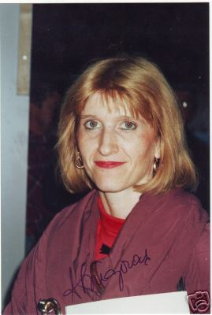

Anca Grigoras (ROM)
1973 European B Bronze Medalist

|
Olympic
Games:
1 Silver |
Anca was born on November 8, 1957 in Comanesti. The family moved to Gheorghe Gheorghiu-Dej when Anca was four and it was there she began gymnastics at age 8. Her first coach was Marcel Duncan; later, Mircea Bibire and Norbert Kuhn trained her at the famous Flacara club in her hometown. Grigoras is now a brevet judge and can be seen at many international competitions.
Competition Results
1967 1968 1969 1970 1973 1974 1975 1976 1977 1979 This page was created on March 10, 2000
and was last updated on June 11, 2026.
Jr. ROM Championships: 3rd AA (Cat. I)
Jr. BUL-ROM Dual Meet: 1st Team, 2nd AA
Jr. TCH-ROM Dual Meet: 1st Team, 2nd AA
ROM Championships: 2nd Team (Master)
Jr. ROM-TCH Dual Meet: 1st Team, 3rd AA, 1st UB, 3rd V, 3rd FX
Jr. ROM-YUG Dual Meet: 1st Team, 3rd B, 3rd FX
Romanian Sports Schools Championships: 4th AA (Master)
BUL-ROM Dual Meet: 1st Team, 4th AA
Flacara-Debrecen (HUN) Dual Meet: 1st Team, 1st AA
Flacara-Yerevan (USSR) Dual Meet: 1st Team, 2nd AA, 1st UB
Intl. Junior Championships (Druzhba): 5th Team, 20th AA
Jr. ROM Championships: 5th AA, 3rd B
Romanian Federation Cup: 4th AA, 1st UB (Master)
Romanian Sports Schools Championship: 1st Team, 6th AA
1971
Balkan Championships: 4th AA, 1st B, 2nd UB, 2nd FX
Intl. Junior Championships (Druzha): 4th Team
Jr. ROM Championships: 2nd AA, 1st B
ROM-HUN Dual Meet: 1st Team, 6th AA
ROM-USSR Dual Meet: 2nd Team, 6th AA
Romanian Championships: 6th AA, 1st UB
Romanian Sports Schools Championship: 1st Team, 2nd AA, 1st UB
USA-ROM Dual Meet: 1st Team, 2nd AA
1972
Intl. Championships of Romania: 5th AA
Jr. Romanian Championships: 2nd AA, 1st UB, 1st B, 2nd FX
Olympic Games:
6th Team, 29th AA
ROM-CHN Dual Meet: 2nd Team, 3rd AA
Romanian Championships: 1st AA, 1st B, 2nd UB, 2nd FX
Balkan Championships: 1st Team, 1st AA, 1st UB, 2nd V, 2nd FX
CSSR-ROM Dual Meet: 2nd Team, 2nd AA
European Championships: 9th AA, 3rd B, 6th UB
FRG-ROM Dual Meet: 1st Team, 1st AA
London International: 3rd AA
Romanian Championships: 1st AA, 1st B, 2nd UB, 2nd FX
ROM-NED Dual Meet: 1st Team, 1st AA, 1st UB, 1st B, 2nd FX, 3rd V
ROM-USSR Dual Meet: 1st Team, 3rd AA
USA-ROM Dual Meet: 6th AA
International Championships of Romania: 3rd AA, 1st UB, 3rd FX
ITA-ROM Dual Meet: 1st Team, 1st AA
ROM-FRG Dual Meet: 1st Team, 3rd AA
ROM-HUN Dual Meet: 2nd Team, 7th AA
Romanian Championships: 2nd AA, 1st B, 2nd UB, 3rd V, 3rd FX
World Championships: 4th Team, 12th AA
Antibes International: 2nd AA, 1st B, 1st FX, 2nd UB, 4th V
Balkan Championships: 1st Team, 1st AA, 1st B, 1st FX, 3rd V
Milk Meet: 3rd AA
ROM-HUN-RSFSR Tri-Meet: 1st Team, 1st AA, 1st V, 1st UB, 1st FX
World Cup: 9th AA, 5th UB
Balkan Championships: 1st Team, 3rd AA
CAN-ROM Dual Meet: 1st Team, 3rd AA
FRA-ROM Dual Meet: 1st Team, 3rd AA
FRG-ROM Dual Meet: 1st Team, 3rd AA
GBR-ROM Dual Meet: 1st Team, 3rd AA
HOL-ROM Dual Meet: 1st Team, 4th AA
Olympic Games: 2nd Team, 15th AA (prelims)
Romanian Championships: 3rd AA, 3rd B
ROM-PRK Dual Meet: 1st Team, 1st AA
USA-ROM Dual Meet: 1st Team, 9th AA
Athens International: 2nd AA
Blume Memorial: 3rd AA
GBR-ROM Dual Meet: 1st Team, 1st AA
International Champs. of Romania: 5th AA
Ontario Cup: 2nd AA
Paris Grand Prix: 2nd AA
Romanian Championships: 4th AA
University Games: 2nd Team, 2nd B, 3rd V, 5th FX
1978
Balkan Championships: 1st Team, 2nd AA, 1st UB
Coca Cola International: 4th AA
Dynamo Spartakiade: 3rd AA
FISU Invitational: 1st AA, 1st B, 2nd V
FRG-ROM Dual Meet: 1st Team, 7th AA
HOL-ROM Dual Meet: 1st Team, 1st AA
International Champs. of Romania: 4th AA, 1st V
Ljubljana International: 3rd AA
Romanian Championships: 3rd AA
ROM-FRA Dual Meet: 1st Team
ROM-GBR Dual Meet: 1st Team, 1st AA
Shanghai International: 3rd AA
World Championships: 2nd Team, 25th AA (prelims)
Coupe de Geneve: 2nd AA
Cottbus International: 14th AA
University Games: 2nd Team, 4th AA, 2nd B, 3rd UB
© Gymn Forum